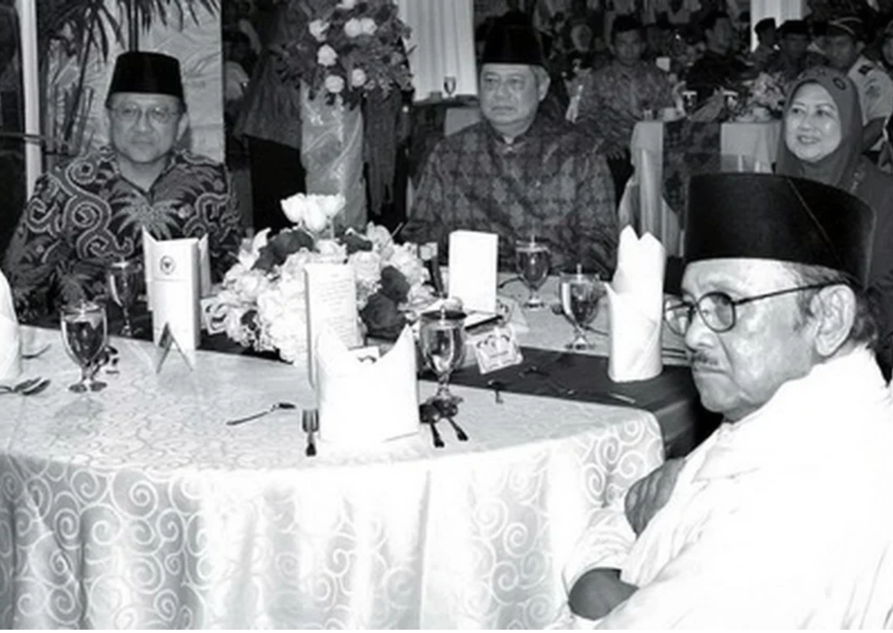

Pionir Sistem Otonomi Daerah Modern (1999)
Melalui UU No. 22/1999 tentang Pemerintahan Daerah yang disahkan 7 Mei 1999, Habibie merombak sistem sentralistik warisan Orde Baru menjadi desentralisasi kewenangan ke daerah. Kebijakan ini menjadi fondasi tata kelola otonomi daerah yang masih dipakai hingga kini, meski regulasinya telah diperbarui beberapa kali.